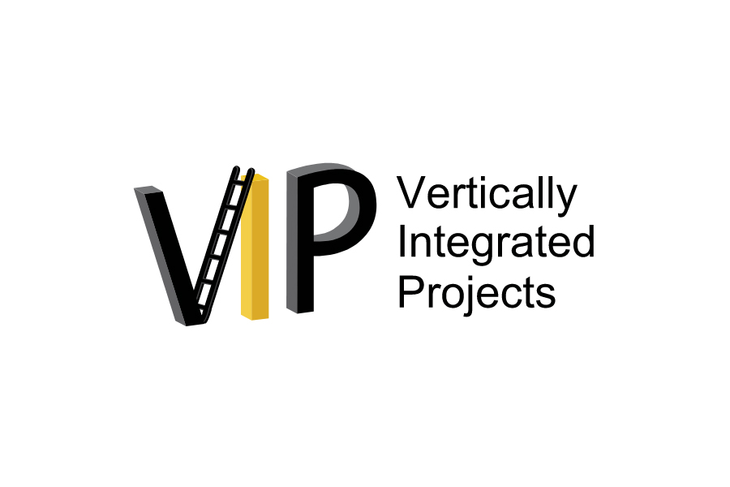
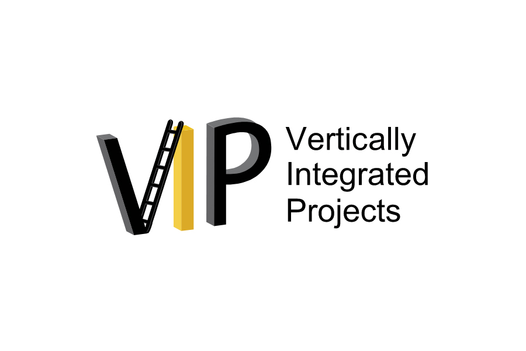

AIM Vertically Integrated Projects Team
Introduction + Purpose of the Team
AIM stands out among other music technology research groups because of its pedagogy. While other music technology groups may cater primarily to graduate students and professionals, our group is open to all Purdue students of any major and experience level.
We hope that by helping any student interested in music technology/machine learning learn to work with these technologies, we can make a difference in these students' lives while simultaneously encouraging the adoption of music technology.
Interested students
Although we try to allow as many students as we have capacity for to join, we do have a requirement that new members are fluent in Python and Numpy (or can pick it up within a week or two of joining). Learning introductory coding, while important, would be almost impossible while also balancing research duties on the team.
Pretty much every other skill can be learned while on the team, although some skills take more dedication and effort to learn than others.
Below you can find a Google Doc containing some information about the current VIP projects.
Projects + thesis capability
Almost all AIM students choose one of the following projects to work on (see the doc below). However, if you have an idea for a scope extension to a project or would like to complete a thesis/paper on a project, please reach out to the contacts below. We'd love to hear your ideas!
Current projects
VIP Page
Here is a link to the official Purdue AIM VIP page.What's next?
If you are interested in this project, email Prof. Lu or Tim to indicate your interest in the project.
Graduate students
Please indicate that you are a graduate student in your email. Funding might be available depending on your level of commitment to the project. If you desire funding, please also ensure your CV is up-to-date as it may be required shortly after the initial email.
Undergraduate students
Undergraduate students are required to join the VIP team for their first semester in AIM. A CRN will be provided as needed once you email. Funding may be available to those participating in SURF or similar positions; please follow the guidelines above.